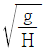
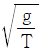
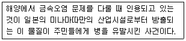
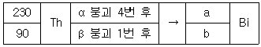
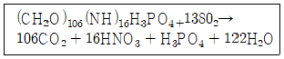
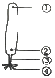

해양조사산업기사 (2018-04-28 기출문제)
1과목: 물리해양학
1. 심층류 순환의 직접적인 원인이 되는 것은?
- 탁월풍
- 밀도 분포
- 해수면의 경사
- 기조력의 차이
(정답률: 81%)

2. 천해파의 위상속도는? (단, g : 중력가속도, H : 수심, T : 주기)
- √gH

- √gT

(정답률: 85%)
3. 다음 중 해류 중 평균유속이 가장 큰 것은?
- 페루 해류
- 오야시오 해류
- 포클랜드 해류
- 쿠로시오 해류
(정답률: 91%)
4. 해양에서 수심에 따른 밀도의 변화폭이 급격한 상태를 나타내는 것은?
- Halocline
- Pycnocline
- Thermocline
- SOFAR Chennel
(정답률: 76%)
5. 관성류(inertial current)에 관한 설명 중 옳은 것은?
- 관성주기는 다른 조건이 같을 때 속력이 빠를수록 커진다.
- 관성반경은 다른 조건이 같을 때 속력이 빠를수록 작아진다.
- 관성주기는 다른 조건이 같을 때 저위도일수록 커진다.
- 관성반경은 다른 조건이 같을 때 고위도일수록 커진다.
(정답률: 59%)
6. 다음의 조석 분조 중 주기가 가장 짧은 것은?
- M2
- S2
- K1
- O1
(정답률: 69%)
7. 해수 중 소리의 전파속도에 관한 설명으로 옳은 것은?
- 수온이 증가할수록 빨라진다.
- 압력이 증가할수록 늦어진다.
- 염분이 감소할수록 빨라진다.
- 수온, 수심 및 염분과는 관계가 없다.
(정답률: 88%)
8. 바람 방향에 대한 에크만(Ekman) 수송의 방향은?
- 남반구에서 바람의 응력이 미치는 방향과 같은 방향
- 남반구에서 바람의 응력이 미치는 방향에 대하여 오른쪽 직각 방향
- 북반구에서 바람의 응력이 미치는 방향에 대하여 왼쪽 직각 방향
- 북반구에서 바람의 응력이 미치는 방향에 대하여 오른쪽 직각 방향
(정답률: 90%)
9. 북반구에서 동쪽 해수면이 서쪽보다 높은 순압성 유체의 경우, 지형류는 어느 방향으로 흐르는가?
- 동향
- 서향
- 남향
- 북향
(정답률: 73%)
10. 염분이 35.00‰이고 수온 5℃의 물이 단열적으로 4000m 깊이까지 내려간다면 물의 수온은?
- 4000m 깊이의 수온이 된다.
- 단열상태로 하강하므로 수온의 변화가 없다.
- 압축으로 인하여 수온이 약간 증가하게 된다.
- 수심이 깊어지므로 수온이 약간 하강하게 된다.
(정답률: 71%)
11. 물의 물리적 특성에 관한 설명 중 옳은 것은?
- 비열은 모든 액체들 중에서 가장 높다.
- 표면장력은 모든 액체들 중에서 가장 작다.
- 증발 잠열은 모든 물들 중에서 가장 크다.
- 열전도도는 액상 NH3보다는 낮으나 그 외의 다른 액체들보다는 높다.
(정답률: 68%)
12. 일조부등(diurnal inequality)이 극히 작은 시기의 조석은?
- 회귀조(tropic tide)
- 근지점조(perigean tide)
- 원지점조(apogean tide)
- 분점조(equinoctial tide)
(정답률: 68%)
13. 다음 중 강제파의 해당하는 것은?
- 너울
- 조석파
- 쓰나미
- 항만의 고유진동
(정답률: 88%)
14. 역학적 해류계산법과 관계가 없는 것은?
- 기준면
- 마찰력
- 밀도분포
- 압력경도력
(정답률: 59%)
15. 깊이 100m와 200m 상이의 평균 현장비용이 0.998cm3/g이라면 이 두 깊이 상이의 역학적 심도는?
- 99.8 dynamic meter
- 100.2 dynamic meter
- 998.0 dynamic meter
- 1002.0 dynamic meter
(정답률: 84%)
16. 우리나라 동해에 흐르지 않는 것은?
- 동한난류
- 북한한류
- 연해주한류
- 오야시오 해류
(정답률: 86%)
17. 혼합층(표층)에 대한 설명으로 옳은 것은?
- 혼합층이 생기는 원인은 담수유입 때문이다.
- 혼합층과 수온약층의 물은 서로 활발하게 혼합된다.
- 혼합층을 형성하는 해수의 양은 해양 전체의 대략 2%에 불과하다.
- 혼합층의 두께 태양복사에 의한 열에너지 유입이 많은 여름철에 가장 두꺼워진다.
(정답률: 83%)
18. 조석형태수(F)가 0.25 이하인 조석의 형태는?
- 일주조형
- 혼합조형
- 반일주조형
- 태음분조형
(정답률: 87%)
19. 하구(Estuary)에서 조류에 의한 해수 교환량을 T, 하천수 유입량을 Q라 하면 다음 하구유형 중에서 Q/T가 가장 큰 것은?
- 피오르드형(Fjord type)
- 염수쐐기형(Salt wedge type)
- 완전혼합형(Well mixed type)
- 부분혼합형(Partially mixed type)
(정답률: 82%)
20. 수심 40m에서 파고 1m인 천해파가 굴절없이 연안으로 진입하는 경우 수심 10m인 곳에서의 파고는? (단, 마찰로 인한 파의 소멸은 무시한다. )
- 약 1m
- 약 1.4m
- 약 1.8m
- 약 2.2m
(정답률: 70%)
2과목: 화학해양학
21. 다음 온실효과기체 중 해양에 가장 많이 들어있는 것은?
- 메탄
- 이산화탄소
- 질소산화물
- 염화불화탄소
(정답률: 84%)
22. 다음 핵종 중 심해저 망간단괴의 성장속도 측정에 가장 많이 이용되는 것은?
- 201Pb(반감기 = 22년)
- 228Th(반감기 = 1.9년)
- 210Po(반감기 = 138년)
- 230Th(반감기 = 7.5 × 104년)
(정답률: 75%)
23. 해수에 녹아 있는 주요 음이온 중 농도가 2번째로 높은 것은?
- SO42-
- Cl-
- Br-
- HCO-
(정답률: 69%)
24. 해수 중의 암모니아 측정법으로 사용되는 방법은?
- GR법
- 윙클러법
- 인도페놀법
- Cd-Cu 환원법
(정답률: 74%)
25. 다음 천연방성성 핵종 중 화학적 성질이 기체인 것은?
- 222Rn
- 228Ra
- 210Pb
- 238U
(정답률: 62%)
26. CaCO3으로 외각을 만들지 않는 플랑크톤은?
- 익족충
- 방산충
- 코콜리드
- 유공충
(정답률: 75%)
27. 해수 중에는 많은 원소들이 용해되어 있다. 다음 원소들 중에 농도가 가장 작은 것은?
- Fe
- Ca
- Mg
- Na
(정답률: 86%)
28. 다음 중 해양오염에 관한 설명으로 틀린 것은?
- 해양의 자정능력은 한정되어 있다.
- 해중 방류관은 해표면에 위치하는 것이 좋다.
- 연안역에 유입되는 오염물질은주로 육지로부터 유입된다.
- 해양에서 오염물질의 확산은 수직방향보다 수평방향이 더욱 크다.
(정답률: 85%)
29. 해수에서 주요 영양염은 질소, 인, 규소이다. 용승역과 같이 영양염이 많은 심층수가 용승하는 것은 어떤 해역인가?
- 적조 해역
- 부영양 해역
- 반영양 해역
- 중-빈영양 해역
(정답률: 76%)
30. 해수는 각종의 염류를 포함하고 있으며, 이들의 합은 해수 1kg당 중량비로 표시된다. 다음 중 대양의 염분농도로서 가장 적합하게 표시한 것은?
- 19‰
- 25‰
- 30‰
- 35‰
(정답률: 85%)
31. 해수 중의 용존산소에 관한 설명으로 틀린 것은?
- 용존산소의 양은 수중의 광합성과 관계가 깊다.
- 광합성이 활발한 표층수에는 대개 산소가 포화되어 있지 않다.
- 해수중 산소의 용해도는 온도와 염분이 증가함에 따라 감소한다.
- 유기물이 많은 저층수에서는 분해과정에서 산소가 소비되어 용존산소량이 표층보다 적다.
(정답률: 90%)
32. 해수 중 용존산소를 Winkler-Azide 변법으로 측정할 때 NaN3를 첨가하는 이유는?
- 유기물 존재 시 정의 오차가 발생하는 것을 막기 위해
- 아질산이온에 의한 정의 오차가 발생하는 것을 막기 위해
- 망간이온에 의한 부(-)의 오차가 발생하는 것을 막기 위해
- 황화물이온에 의한 부(-)의 오차가 발생하는 것을 막기 위해
(정답률: 75%)
33. 다음에서 설명하는 물질은?

- 납
- 비소
- 크롬
- 메틸수은
(정답률: 82%)
34. 북태평양 표층 해수에서 고갈을 보이고 중층에서 재순환에 의해 최대값을 보이며, 영양염류와 정의 상관관계를 나타내고 생물제한 원소적인 수직농도 분포를 보이는 미량금속은?
- Ba
- Ni
- Cd
- Al
(정답률: 79%)
35. 해수 중 화학성분이 공금(유입량)과 제거(제거량)가 평형이 되어 시간에 따른 농도의 변화가 없는 상태는?
- 열린상태
- 정상상태
- 체류상태
- 폐쇄상태
(정답률: 86%)
36. 다음 토륨 동위원소가 붕괴경로를 알파붕괴 4회, 베타붕괴 1회 하였다면 비스부스(Bi)가 된다. 이 때 질량(a)과 원자번호(b)로 옳은 것은?

- a = 214, b = 83
- a = 216, b = 84
- a = 220, b = 88
- a = 228, b = 90
(정답률: 60%)
37. 표층해수의 평균적인 수소이온 농도(pH)는 약 얼마인가?
- 6.8
- 7.5
- 8.2
- 9.0
(정답률: 76%)
38. 해저지질 속의 아황산(SO42-)을 황화수소(H2S)로 바꾸어 악취의 원인이 되게 하는 것은?
- 유공충
- 코콜리스
- 미소플랑크톤
- 황산염 박테리아
(정답률: 83%)
39. 해양의 유기물 분해과정식이다. 이 식에서 생성되는 이산화탄소와 사용되는 산소의 분자비의 호흡률의 값은?

- 약 106
- 약 138
- 약 7.7
- 약 0.77
(정답률: 73%)
40. PCB(Poly Chlorinate Biphenyl)의 화학적 특성이 아닌 것은?
- 높은 안정성
- 낮은 휘발성
- 높은 절연성
- 수중에서의 높은 용해도
(정답률: 82%)
3과목: 생물해양학
41. 다음 중 연안해저지역의 오염에 강해서 생존이 가능한 종류가 가장 많이 포함되어 있는 분류군은?
- 우렁쉥이류
- 게 및 새우류
- 갯지렁이류
- 대합류
(정답률: 87%)
42. 다음 영양염 중 해양환경에서 가장 큰 제한요소로 작용하는 것은?
- 염소
- 칼륨
- 요오드
- 질소
(정답률: 71%)
43. 다음의 다시마 그림 중 분열조직이 있는 곳은?

- ①
- ②
- ③
- ④
(정답률: 81%)
44. 다음 연체동물 중 외골격(패각)을 가지고 있지 않는 종류는?
- 딱지군부
- 몰레고둥
- 피조개
- 군소
(정답률: 78%)
45. 어류의 감각기관에 대한 설명이 옳지 않은 것은?
- 어류는 수중생활을 하므로 냄새를 맡을 수 없으며, 따라서 코가 없다.
- 어류의 측면에 대개 일직선 형태로 분포하는 옆줄은 물의 유동이나 압력변화를 감지하는 기관이다.
- 어류도 사람의 귀에 해당하는 감각기관이 발달해 있으며, 주로 평형감각을 유지하는데 사용한다.
- 어류의 시각기관인 눈의 구조는 포유류의 눈만큼 발달하지는 않았지만 상당히 유사한 구조를 하고 있다.
(정답률: 79%)
46. 일부 해양 동물플랑크톤에서 나타나는 일일수직회 유의 원인에 대하여 지금까지 주장된 생태적 해석으로 적합한 내용은?
- 낮에는 대사율을 낮추기 위해서 상대적으로 수온이 낮은 저층으로 내려간다.
- 낮에는 포식자의 시각적 감지를 피해서 표층으로 올라온다.
- 밤에는 번식을 위해서 저층으로 내려간다.
- 밤에는 내재적 생체리듬에 따라 표층으로 올라온다.
(정답률: 67%)
47. 온대지방의 연안에서 수온약층이 잘 발달하는 계절은?
- 봄
- 여름
- 가을
- 겨울
(정답률: 88%)
48. 해양 생태계의 먹이연쇄는 여러 가지 요인에 의해 나타난다. 그 유형으로 적합하지 않는 것은?
- 초식먹이연쇄
- 부식먹이연쇄
- 기생먹이연쇄
- 질병먹이연쇄
(정답률: 80%)
49. 갈조류에 속하는 것은?
- 풀가사리
- 다시마
- 김
- 우뭇가사리
(정답률: 70%)
50. 다음 중 적조 원인생물로서 가장 유독종이 않은 분류군은?
- 규조류
- 편모조류
- 야광충류
- 남조류
(정답률: 65%)
51. 물 속에서 마찰저항을 줄이려는 유영동물의 적응현상이 아닌 것은?
- 표피의 점액질
- 둥근 체형
- 매끈한 체표면
- 돌출된 눈
(정답률: 85%)
52. 해양에서 부유생물의 유동은 해류의 흐름에 크게 의존하는데 이러한 회유를 무엇이라고 하는가?
- 산란회유
- 유기회유
- 계절회유
- 색이회유
(정답률: 85%)
53. 수서생물을 그 생활양식에 따라 분휴(생태적 구분)할 때 적합하지 않은 것은?
- 부유생물
- 원양생물
- 유영생물
- 저서생물
(정답률: 86%)
54. 해양의 광합성 보상심도(compensation depth)의 정의는?
- 광합성량이 최대인 깊이
- 광합성량이 최소인 깊이
- 광합성량과 호흡량이 동일한 깊이
- 광합성량이 호흡량의 정확히 두 배가 되는 깊이
(정답률: 91%)
55. 다음 중 바다의 생물군집 분표에 작용하는 가장 중요한 제한요소는?
- 물의 온도
- 물의 pH
- 물의 색깔
- 물의 냄새
(정답률: 77%)
56. 체장이 2~3 cm 정도이며, 그 알은 보육낭에서 성체까지 성장하는 연감류 부유생물인 곤쟁이(Mysid)는 주로 어느 생물의 천연먹이로 쓰이는가?
- 남조류
- 양서류
- 어류
- 조개류
(정답률: 84%)
57. 해양생물의 특성에 대한 설명이 옳지 않은 것은?
- 게와 같은 십각류는 다리가 10개이다.
- 해면동물은 해수 속을 헤엄치면서 작은 어류 등을 먹이로 한다.
- 말미잘은 촉수에 침세포를 가지고 있어서 먹이생물을 마취시켜 잡아먹는다.
- 고둥류는 패각이 1개이거나 없는 종류도 있다.
(정답률: 76%)
58. 다랑어류 가운데 가장 큰 종류는?
- 날개다랑어
- 참다랑어
- 눈다랑어
- 황다랑어
(정답률: 90%)
59. 바다에서 적조(赤潮)가 가장 많이 나타나는 시기는?
- 겨울
- 늦가을
- 여름
- 이른 봄
(정답률: 82%)
60. 다음 중 해양식물 플랑크톤의 주류를 이루는 Diatom의 세포벽 형성을 위해 필요한 영양염 중 중요한 것은?
- 규산염
- 질산염
- 인산염
- 암모니아
(정답률: 70%)
4과목: 지질해양학
61. 다음 중 퇴적층이 가장 적게 분포하는 곳은?
- 해구
- 대륙대
- 대륙사면
- 심해저 평원
(정답률: 69%)
62. 일반적으로 대륙붕에서 개발 가능한 해저자원이 아닌 것은?
- 망간단괴
- 석유 및 천연가스
- 모래, 자갈 등의 토목자재
- 모나자이트, 저어콘, 사금 등의 중사
(정답률: 82%)
63. P파 에너지가 거의 도달하지 않는 지역인 음영대(shadow zone)는 진원으로부터 몇 도 위치에 존재하는가?
- 103° ~ 142°
- 115° ~ 153°
- 125° ~ 163°
- 143° ~ 175°
(정답률: 86%)
64. 원마도가 가장 높은 사질 퇴적물은 다음 중 어느것에 위해 운반되는 것인가?
- 바람
- 빙하
- 유수
- 해수
(정답률: 70%)
65. 해저에서 석유를 발견할 수 있는 지층구조가 아닌것은?
- 단층구조
- 배사구조
- 암염 돔 구조
- 함몰사태구조
(정답률: 73%)
66. 유기물에 의하여 형성된 해안은?
- 셸 해안
- 리아스 해안
- 산호초 해안
- 톰볼로 해안
(정답률: 79%)
67. 동태평양 해령의 심해저에서와 같이 지각의 틈을 통해 분출되는 고온의 해수에 의해서 형성되는 광물자원을 이루는 곳은?
- 사광
- 망간단괴
- 열수광상
- 석회질 연니
(정답률: 88%)
68. 방해석의 주 광물성분으로 구성된 생화학적 퇴적암은?
- 사암
- 셰일
- 이암
- 석회암
(정답률: 65%)
69. 다음 중 해저면의 수평적인 분포상태를 조사하는 장비로 가장 적절한 것은?
- 소노부이(sonobuoy)
- 에어건(air gun) 시스템
- 사이드 스캔소나(side scan sonar)
- 핵자력계(proton precession magnetometer)
(정답률: 89%)
70. 수성기원퇴적물이 아닌 것은?
- 인회석
- 해록석
- 망간단괴
- 텍타이트
(정답률: 69%)
71. 자생(authigenic)기원 해양퇴적물은?
- 석영
- 산호
- 자철석
- 해록석
(정답률: 66%)
72. 해저협곡이 주로 발달되는 지역은?
- 대륙대
- 대륙사면
- 대양저산맥
- 심해저 평원
(정답률: 59%)
73. Galloway의 삼각주 분류방법 중 퇴적층의 형태를 결정하는 요인이 아닌 것은?
- 강
- 바람
- 조석
- 파도
(정답률: 54%)
74. 사주는 주로 어디에서 형성되는가?
- 연안
- 대륙대
- 대륙사면
- 심해저평원
(정답률: 83%)
75. 다음 중 대륙사면의 수심 범위로 가장 적절한 것은?
- 500m 보다 얕음
- 200 ~ 3700m
- 4000 ~ 5000m
- 5000 ~ 6000m
(정답률: 79%)
76. 중력보정 중 부우게 보정(Bouguer Correction)에 관한 설명으로 옳은 것은?
- 위도에 따른 원심력의 차이를 보정
- 주위의 지형에 의한 영향을 제거하기 위한 보정
- 관측된 중력치를 평균해수면(geoid)에서의 중력치로 보정
- 측정지점과 geoid 사이의 물질의 영향을 제거하기 위한 보정
(정답률: 58%)
77. 다음 중 교란되지 않은 해저면을 가장 효과적으로 채취할 수 있는 시추기는?
- 중력 시추기
- 상자형 시추기
- 진동형 시추기
- 피스톤 시추기
(정답률: 73%)
78. 수렴형 판경계부 중 2개의 대륙판이 서로 충돌하여 형성된 지역은?
- 마리아나 해구
- 히말라야 산맥
- 대서양 중앙해령
- 샌안드레아스 단층대
(정답률: 88%)
79. 다음 중 우리나라 서해 연근해저 표층에 분포하는 점토광물 중 가장 흔한 광물은?
- 일라이트(illite)
- 녹니석(chlorite)
- 고령석(kaolinite)
- 스멕타이트(smectite)
(정답률: 83%)
80. 세립질 퇴적물의 입도분석 방법 중 피펫방법은 다음 중 어느 법칙을 이용한 것인가?
- 뉴턴의 법칙
- 샤를의 법칙
- 스톡스의 법칙
- 오일러의 법칙
(정답률: 74%)